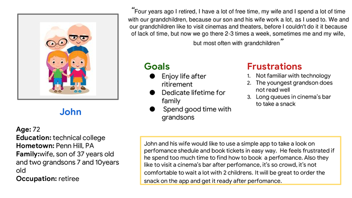

Design movie theatre app
Project Background
I created a Movie Theatre app to attract and retain customers in cinemas and theatres. We noticed that our competitors offer dedicated mobile apps for their customers to order through, and they have been very successful. We want to create a product that can compete in the market, improve sales, and increase customer satisfaction.
My role
UX designer leading the app design from conception to delivery.
Responsibilities
Conducting interviews, paper and digital wireframing, low and high fidelity prototyping, conducting usability studies, accounting for accessibility, iterating on designs, determining information architechture and responsive design.

The problem:
People above 65 years old, busy workers, families with children can easy access and book movie tickets
The goal:
Design an app that allows people easily access, search and book movie tickets choosing by date, time, location and cinema’s sits
Understanding the user
I conducted interviews and created empathy maps to understand the users I’m designing for and their needs. A primary user group identified through research was retired people of age over 65 years old who has a lot of free time and enjoy movie theatre 2-3 times a weeek. The secondary user group is young lonely people who study or work and don’t have too much time to search shedule and who likes to see movies alone or with their friends.
The user group confirmed initial assumption about theatre movies users and also revealed that some part of users is not familiar with technology, have problems with reaching to the movie theatres places.
user research pain points:
-
Technology
Some users are unfamiliar with technology , as like as old people or children
-
Time
Working people don’t have much time to navigate and choose movies
-
Place map
People who moved in their place in recent time have dificulty with understand where and how to reach to movie theatre
-
Accessibility
Old people, children, foreiners and people with dislexia have difficulty to understand long text pieces
Personas
User journey map
Doing user journey app revealed how helpful it would be for users to access to movie booking app that helps to save time
Paper wireframe
Taking time to draft iteration of each screen of the app on paper ensured that the elements of digital wireframewould be well suited to adress user pain points and asure a quick and easy searching and ordering process
Digital wireframe
Initial design phase, main screen designed on feedback and findings of user research
Low fidelity prototype
Using the completed set of digital wireframes, I created a low fidelity prorotype. The primary user flow I connected was searching and booking movie tickets, so the prototype could be used in a usability study.
Usability Study Details
Research Questions
- How long does it take for a user to select and book tickets in the app?
- Are users able to successfully order the pizza that they want?
- What can we learn from the steps users took to order a pizza?
- Are there any parts of the pizza ordering process where users are getting stuck?
- Is the payment process easy for the customer?
Participants
7 participants of age 18-75 who live in metropolitan and suburb areas. Participants frequent cinemas at least once a week
Methodology
- 20-30 minutes
- United States, remote
- Unmoderated usability study.
- Users were asked to book a cinema tickets on a low-fidelity prototype
Usability study results
I conducted two rounds of usability studies. Findings from the first study helped guide the designs from wireframes to mockups. The second study used a high-fidelity prototype and revealed what aspects of the mockups needed refining.
Round 1 findings
- Users want quick and easy tickets booking
- Users want more search options
- Movies search by date is confusing
Round 2 findings
- Booking tickets process needs additional step.
- Users need a confirmation message after complete payment
Research insighs
- Quick booking Users need to book ticket without brouse all the movies by inserting date and time
- Customization of searching Users need to check desired movie and choose date, time and location optionsthe
- Customization of booking Users need to see sitting places options before booking
- Customization of payment Users need resume page before of order before paying
Recommendations
- Add search input where user can enter movie name
- Add date input to search movies by date
- Add a rate label to show movie’s rate for user
- Add a resume page with order
High-fidelity prototype
The final high-fidelity prototype presented cleaner user flows for searching and booking movie tickets. It also met user needs for different search option.
Accessibility consideration
- Provided access to users who are vision impaired through adding alt text to images for screen readers.
- Used icons to help make navigation easier.
- Used detailed description and imagery for movies to help all users better understand the designs.
Takeaways
Impact
The app makes users feel like movie theatre app really thinks about how to meet their needs. One quote from peer feedback: ‘I like to use the app, I find different options to search movies and booking process is comfortable and quick
What I learned
While designing the Movie theatre app, I learned that the first ideas for the app are only the beginning of the process. Usability studies and peer feedback influenced each iteration of the app’s designs.
Next steps
- Conduct another round of usability studies to validate whether the pain points users experienced have been effectively addressed.
- Conduct more user research to determine any new areas of need.
- Conduct competitive audit to find new feature